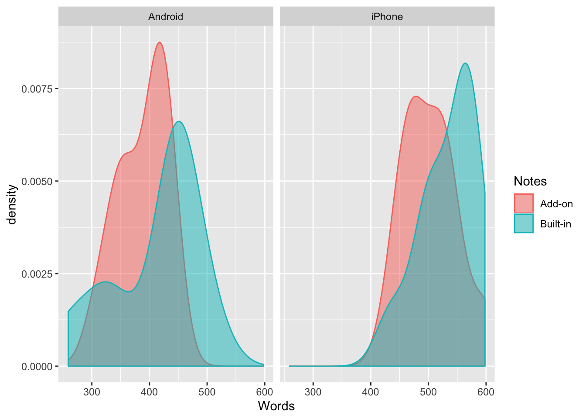

Researching The User Preference On Note-taking Apps
- Project purpose.
- Result summary.
- 1 Explore and familiarise with the dataset.
- 1.1 Summarise of the dataset.
- 1.2 Check the detail of the dataset.
- 1.3 Compare the mean between different phone and notes-app.
- 1.4 Visualise the distribution based on ‘Order’ by ‘Phone’ variable.
- 1.5 Visualise the distribution based on ‘Notes’ by ‘Phone’ variable.
- 1.6 Visualise the interaction between ‘Phone’ and ‘Notes’.
- 1.7 Summary for data exploration.
- 2 Perform assumptions test.
- 3 Conclusion.
- 4 Notes for future reference.
Project purpose.
The user research team conducted an experiment design to find out whether users use built-in-app or third-party-app more often for note-taking. There are 20 users. Each user were asked to use both built-in-app and third-party-app on either iPhone or Andriod in different order. The users were randomly assigned to specifc order and device. Meaning, some users will use built-in-app first, while others will use third-app-party first, however, each users will use one device only. The research was conducted for a week. Now that the data is collected, the objective is to conduct a statistical testing to see whether users prefer one app over the other. Number of words the users wrote when using a particular app indicates the users’ preference.
Assumptions about the dataset:
- The experiment is with well-controlled and conducted appropriately by the user research team.
- The samples represent the population with proper stratification and sampling method.
- The user research team follows a appropriate procedure when conducting the experiment.
Result summary.
The conclusion is that there is not enough evidence showing that users prefer one note-taking app over the other. There is also not enough evidence showing that users prefer one note-taking app over the other on different phone. However, I can say that users write more notes on iPhone than Android.
Th third-party-app for note-taking doesn’t seem to attract users to write more notes on it than built-in-app. Launching the third-party-app on different phone also doesn’t attract the users’ preference. We should find out the reasons from the users and redesign the third-party app. Otherwise, we can stop investing our time and effort on creating a third-party-app since it might not produce a good return on investment.
1 Explore and familiarise with the dataset.
df.notes = read_csv("csv/notes.csv")## Parsed with column specification:
## cols(
## Subject = col_double(),
## Phone = col_character(),
## Notes = col_character(),
## Order = col_double(),
## Words = col_double()
## )df.notes1.1 Summarise of the dataset.
# Transform dtype.
df.notes$Order = factor(df.notes$Order)
df.notes$Notes = factor(df.notes$Notes)
df.notes$Phone = factor(df.notes$Phone)
df.notes$Subject = factor(df.notes$Subject)
# Summarise the dataset.
summary(df.notes)## Subject Phone Notes Order Words
## 1 : 2 Android:20 Add-on :20 1:20 Min. :259.0
## 2 : 2 iPhone :20 Built-in:20 2:20 1st Qu.:421.8
## 3 : 2 Median :457.0
## 4 : 2 Mean :459.2
## 5 : 2 3rd Qu.:518.5
## 6 : 2 Max. :598.0
## (Other):281.2 Check the detail of the dataset.
The overview includes the following:
- Check the proportion of nulls.
- Check if there’s any duplicated rows.
dataset_detail = function(df) {
na_count = colSums(is.na(df))
# Details.
nulls_proportion = na_count / nrow(df) * 100
duplicated_nrows = nrow(which(duplicated(df)))
details = list(nulls_proportion, duplicated_nrows)
names(details) = c("nulls_proportion", "duplicated_nrows")
return(details)
}
df.notes.details = dataset_detail(df.notes)
df.notes.details## $nulls_proportion
## Subject Phone Notes Order Words
## 0 0 0 0 0
##
## $duplicated_nrows
## NULL1.3 Compare the mean between different phone and notes-app.
ddply(df.notes, .variables= ~ Phone + Notes, summarise, words_mean=mean(Words), words_median=median(Words))1.4 Visualise the distribution based on ‘Order’ by ‘Phone’ variable.
ggplot(data=df.notes) +
aes(x=Words, color=Order, fill=Order) +
facet_wrap(vars(Phone)) +
geom_density(alpha=.5)1.5 Visualise the distribution based on ‘Notes’ by ‘Phone’ variable.
ggplot(data=df.notes) +
aes(x=Words, color=Notes, fill=Notes) +
facet_wrap(vars(Phone)) +
geom_density(alpha=.5)
1.6 Visualise the interaction between ‘Phone’ and ‘Notes’.
with(df.notes, interaction.plot(Notes, Phone, Words, ylim=c(0, max(df.notes$Words))))
1.7 Summary for data exploration.
Findings from the summary:
- There are 40 rows in total, but 20 users only.
- Each users get to use both built-in-app and third-party-app.
- Users are equally splitted on
Phonevariable. 10 users use iPhone and another 10 use Andriod. - The dataset has no null row.
- The dataset has no duplicated row.
Findings about the variables:
Wordsis the dependent variable.PhoneandNotesare the independent variables.Phoneis between variable.Notesis within variable.- This is a dataset with mixed variables where between and within variables co-exist.
Findings the plots:
- From plot 1.4, it seems like there is an order effect. It is important to ensure there is no order effect to avoid confounding factor. I will perform a significant test on this later.
- From plot 1.5, it looks there isn’t a significant difference between built-in-app and third-party-app. I will perform the test later to confirm.
- Looking at the parellel lines from the interaction plot 1.6, it seems like there is no interaction between
PhoneandNotesonWords.
Next steps:
- I will do a Mixed Factorial ANOVA to ensure there is no order effect.
- If step 1 passes, I will do a normality test using Shapiro and Anderson Darling tests.
- If step 3 passes or correction on variance is made, I will apply Mixed Factorical ANOVA to find out whether the
PhoneandNoteshave significant interaction as well as whether thePhoneorNoteshave significant difference. - If step 3 shows a significant difference, perform pairwise-comparison with adjusted p-value.
The Mixed Factorial ANOVA test above must satisfy the following conditions:
- Variance must be equal (aka Sphericity). Sphericity is the situation where the variances of the differences between all combinations of levels of a within-SS factor are equal. It always holds for within-SS factors that have just 2 levels. Since there is only 2 levels for
Notesvariable, there isn’t a need to test Sphericity. - Distribution must be normal.
2 Perform assumptions test.
2.1 Perform Mixed Factorial ANOVA to check whether there is an order effect.
Null hypothesis: Mean(Order1) = Mean(Order2)
Alternative hypothesis: Mean(Order1) ≠ Mean(Order2)
Significant level: 0.05
ezANOVA(data=df.notes, dv=Words, between=Phone, within=Order, wid=Subject)## $ANOVA
## Effect DFn DFd F p p<.05 ges
## 2 Phone 1 18 43.5625695 3.375888e-06 * 0.56875437
## 3 Order 1 18 0.5486763 4.684126e-01 0.01368098
## 4 Phone:Order 1 18 3.0643695 9.705122e-02 0.07189858Findings:
- Looking at the result for
Ordersession, it shows that there is no order effect. The p-value is 0.468. - There is no interaction effect between
OrderandPhoneas well. The p-value is 0.097.
Moving on to step 2.
2.2 Perform Shapiro and Anderson Darling for normality test.
Null hypothesis: Distribution is normal.
Alternative hypothesis: Distribution is not normal.
Significant level: 0.05
# Shapiro test for normality.
shapiro.test(df.notes[df.notes$Phone == "iPhone" & df.notes$Notes == "Built-in",]$Words)##
## Shapiro-Wilk normality test
##
## data: df.notes[df.notes$Phone == "iPhone" & df.notes$Notes == "Built-in", ]$Words
## W = 0.90411, p-value = 0.2429shapiro.test(df.notes[df.notes$Phone == "iPhone" & df.notes$Notes == "Add-on",]$Words)##
## Shapiro-Wilk normality test
##
## data: df.notes[df.notes$Phone == "iPhone" & df.notes$Notes == "Add-on", ]$Words
## W = 0.95494, p-value = 0.727shapiro.test(df.notes[df.notes$Phone == "Android" & df.notes$Notes == "Built-in",]$Words)##
## Shapiro-Wilk normality test
##
## data: df.notes[df.notes$Phone == "Android" & df.notes$Notes == "Built-in", ]$Words
## W = 0.85714, p-value = 0.0706shapiro.test(df.notes[df.notes$Phone == "Android" & df.notes$Notes == "Add-on",]$Words)##
## Shapiro-Wilk normality test
##
## data: df.notes[df.notes$Phone == "Android" & df.notes$Notes == "Add-on", ]$Words
## W = 0.90204, p-value = 0.2307# Anderson Darling test for normality.
ad.test(df.notes[df.notes$Phone == "iPhone" & df.notes$Notes == "Built-in",]$Words)##
## Anderson-Darling normality test
##
## data: df.notes[df.notes$Phone == "iPhone" & df.notes$Notes == "Built-in", ]$Words
## A = 0.42508, p-value = 0.2519ad.test(df.notes[df.notes$Phone == "iPhone" & df.notes$Notes == "Add-on",]$Words)##
## Anderson-Darling normality test
##
## data: df.notes[df.notes$Phone == "iPhone" & df.notes$Notes == "Add-on", ]$Words
## A = 0.24337, p-value = 0.6875ad.test(df.notes[df.notes$Phone == "Android" & df.notes$Notes == "Built-in",]$Words)##
## Anderson-Darling normality test
##
## data: df.notes[df.notes$Phone == "Android" & df.notes$Notes == "Built-in", ]$Words
## A = 0.76734, p-value = 0.03017ad.test(df.notes[df.notes$Phone == "Android" & df.notes$Notes == "Add-on",]$Words)##
## Anderson-Darling normality test
##
## data: df.notes[df.notes$Phone == "Android" & df.notes$Notes == "Add-on", ]$Words
## A = 0.42012, p-value = 0.2596Findings:
- All the results show that the distributions pass the normality test.
- The only exception is the
Androiddevice andBuilt-inapp. It passes the normality test for Shapiro (p-value 0.07), but fails the Anderson Darling test with a slightly lower p-value (0.03). I will take it as near-normal still despite the contradiction.
Moving on to step 3.
2.3 Perform Mixed Factorial ANOVA test.
Null hypothesis: Mean(variable) = Mean(variable).
Alternative hypothesis: Mean(variable) ≠ Mean(variable).
Significant level: 0.05
ez.model = ezANOVA(data=df.notes, dv=Words, between=Phone, within=Notes, wid=Subject)
ez.model## $ANOVA
## Effect DFn DFd F p p<.05 ges
## 2 Phone 1 18 43.56256949 3.375888e-06 * 0.562185697
## 3 Notes 1 18 2.35976941 1.418921e-01 0.057972811
## 4 Phone:Notes 1 18 0.03872717 8.461951e-01 0.001008948Findings:
All fail to reject null hypothesis except for Phone variable.
Phonehas a significant effect on the app usage. Users write more notes on one phone over the other.- There isn’t any significant difference between ‘built-in-app’ and ‘third-party-app’. Meaning there is not enough evidence showing users write more on one app over the other.
- The result doesn’t show a significant interaction between
PhoneandNotesvariable.
Phone and Notes each has only 2 levels, so there isn’t a need for pairwise comparison. However, I can perform a pairwise comparison for the interaction between Phone and Notes. Nonetheless, it most likely shows no significant difference.
2.4 Perform pairwise-comparison with adjusted p-value.
Null hypothesis: Mean(variable) = Mean(variable).
Alternative hypothesis: Mean(variable) ≠ Mean(variable).
Significant level: 0.05
# Compare different notes-app for iPhone users.
notes.iPhone = t.test(df.notes[df.notes$Phone == "iPhone" & df.notes$Notes == "Built-in",]$Words,
df.notes[df.notes$Phone == "iPhone" & df.notes$Notes == "Add-on",]$Words,
paired=TRUE, var.equal=TRUE)
# Compare different notes-app for Android users.
notes.Andriod = t.test(df.notes[df.notes$Phone == "Android" & df.notes$Notes == "Built-in",]$Words,
df.notes[df.notes$Phone == "Android" & df.notes$Notes == "Add-on",]$Words,
paired=TRUE, var.equal=TRUE)
# Adjust p-value.
p.adjust(p=c(notes.iPhone$p.value, notes.Andriod$p.value), method='holm')## [1] 0.1960779 0.4675674with(df.notes, interaction.plot(Notes, Phone, Words, ylim=c(0, max(df.notes$Words))))3 Conclusion.
The conclusion is that there is not enough evidence showing that users prefer one note-taking app over the other. There is also not enough evidence showing that users prefer one note-taking app over the other on different phone. However, I can say that users write more notes on iPhone than Android.
Th third-party-app for note-taking doesn’t seem to attract users to write more notes on it than built-in-app. Launching the third-party-app on different phone also doesn’t attract the users’ preference. We should find out the reasons from the users and redesign the third-party app. Otherwise, we can stop investing our time and effort on creating a third-party-app since it might not produce a good return on investment.
4 Notes for future reference.
Latest update: 2020/02/10
List of things to take note:
- Currently none.
—————————————————– END ——————————————————